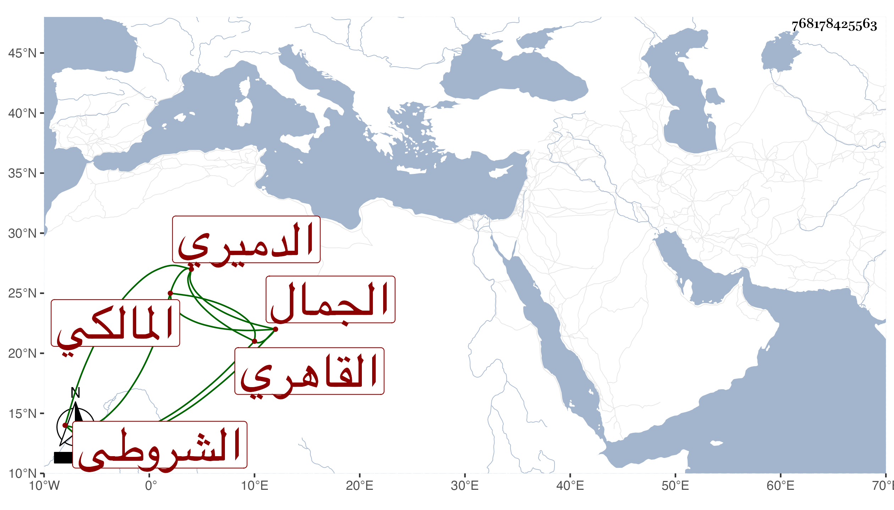

0902Sakhawi.DawLamic.ITO20230111-ara1.EIS1600.768178425563
Biography ID: 768178425563
109
عبد الله بن عبد الملك بن إبراهيم الجمال الدميري ثم القاهري المالكي الشروطي . سمع على شيخنا أشياء مع الراعي وغيره وأجاز له باستدعاء ابن فهد المؤرخ بتاسع عشر رجب سنة ست وثلاثين خلق وهو أحد شهود الصالحية بل صار من قدماء موقعيها وليس بالمتقن .
